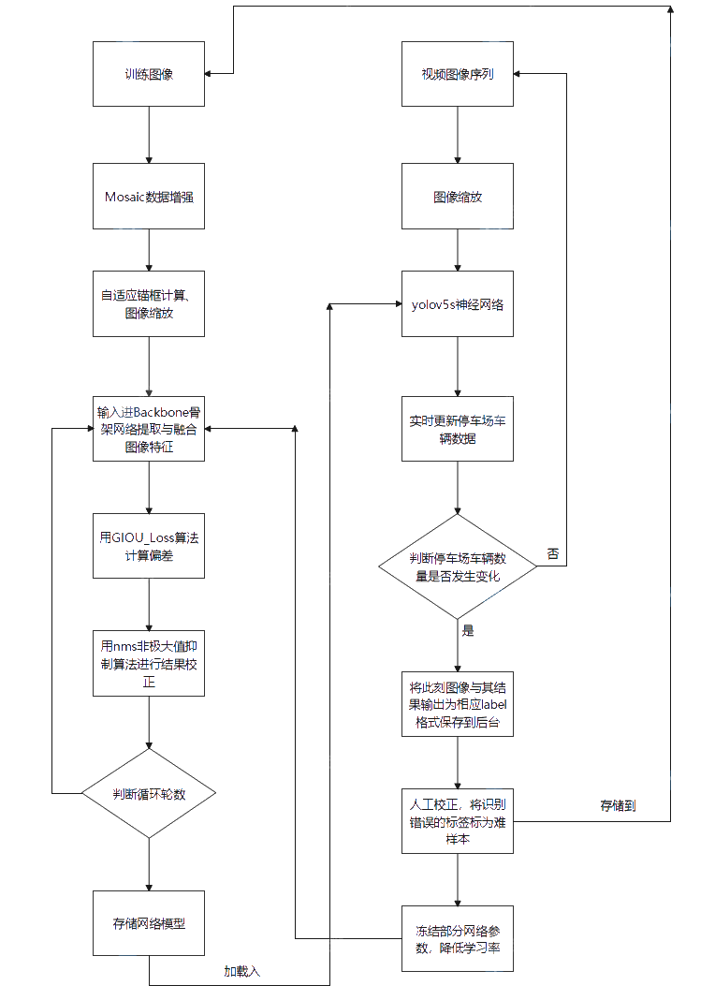
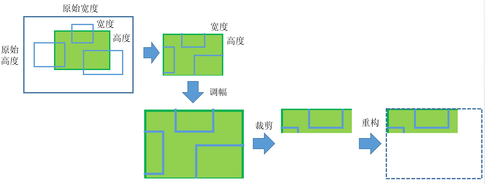
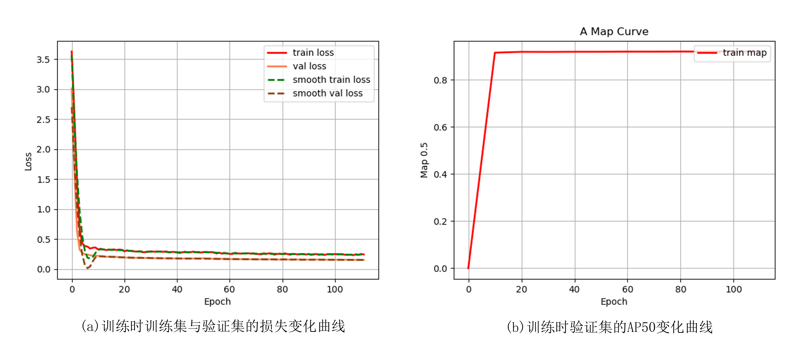
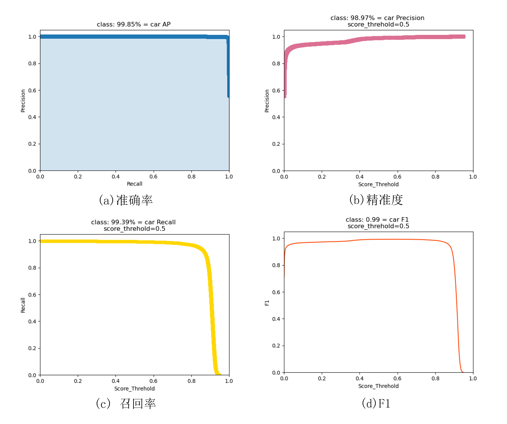

基于深度学习的智能停车场监测调控系统
背景简述
随着国民经济的发展和人民生活消费水平的不断提高，城市汽车的保有量逐年递增，这对城市市容市貌等公共管理问题提出了巨大的挑战。城市停车场的数量和位置有限，采用更准确高效的技术对停车场车位或者车辆位置进行检测，能够有力地帮助我们更好地配置停车场资源。
具体来说，车辆检测就是通过一定的技术手段明确车位与车辆之间的位置关系，即车辆是否完整地停泊在某一车位里或车位在某一时刻下位置是否空缺。在这一问题的研究和解决上，当前主要的思路是在各个车位附近安装各种类型的传感器，通过车辆进出车位时引起的某种信号变化来确定车位的情况。基于传感器的车辆检测主要有以下两种：（1）磁传感器检测。汽车结构中的黑色金属具有很高的磁导率，因此可以产生较为明显的磁场变化。当把磁传感器埋在车尾下方或者放置在车位中央的时候，它能够很敏感地感受到磁场的变化从而判断当前车位的状态。文献[1]中E. Sifuentes等人应用了这种技术，同时配合其他低能耗传感器来唤醒和沉睡传感器，能达到一种能耗相对低廉的车位检测模式。（2）压电传感器检测。压电传感器利用车辆的较大质量，在车辆抵达车位后将压力信号转化为电信号传入控制系统。文献[2]中Nagakalyan S等人应用了这种方法，并获得了较高的准确度。
在实际应用中，由于需要为每一个车位都安装相关的设备，在安装调试以及后期维护上会耗费的巨大的经济成本；另外由于原理上的限制，传感器也相对容易受到外部因素的干扰，导致实际检测的准确度下降。一个新兴的研究方向是基于图像来检测车辆，文献[3]中Liang C.W.等人利用自适应的基于块的梯度强度和定向梯度的直方图来提取汽车的静态特征，但是该方法的计算量较大，检测速度较慢，实时性也较差。
当前的各种检测方法，在经济成本、检测速度、检测精度等方面均有很大的提升空间。能否引入更良好的方法，能够综合各个方面的因素达到高效地实施检测，是很值得进一步研究的问题。
基本方法

算法的初始化
在新环境中按照特定时间进行采样，读入图像序列，可根据实际情况选择是否还需要人工添加标签。需要说明的是，虽然新识别图像存在一定误差，但是标签足以让网络学习车辆的细节特征，在一定程度上能提高网络环境自适应性。
建立图像观测模型
（1）Mosaic数据增强

- 随机缩放：采用基于概率的阈值学习和随机裁剪两大模块组成的随即缩放方法，对于输入图像首先进行阈值学习，求重要度图、判断缩放方向、求能量向量、求阈值并将图像分成保护区域和非保护a区域，在阈值学习后进行随即裁剪并判对缩放比例是否合理。假定前后图像（、）分辨率为与，则图像缩放后为原始图像的
- 随机裁剪：从图像中随机裁剪出一块，需要保证图像至少与一个物体边框有重叠，重叠比率从{0.1，0.3，0.7，0.9}中随机选择，同时至少有一个物体的中心点正好落在图像中。
- 随机排布：为丰富图片背景引入随机排布，将随即裁剪得到的4张图片进行拼接，每张图片都有对应的框框，将四张图片拼接成新图片也同时对应着新的框框，由此产生的一个样本包含了4张图片的信息，并且丰富了物体检测的背景。值得注意的是，当图片的框框（或图片本身）超出两张图片边缘的时候，需要进行边缘处理。
（2）focus切片
将443的图像切片为2212的特征图，逐步从原图上取得高分辨率的patch，将其输入网络，逐步获取相关的预测信息并更新判断，当神经网络自信度超过阈值时，停止更新过程，完成自适应推理。
（3）CSP
设置局部转移层，使用截断梯度流的策略防止不同的层学习重复的梯度信息，通过设计分层特征融合的方法，既能有效减少重复梯度信息，又能提高网络的学习能力。
（4）空洞卷积
空洞卷积可以在增加感受野的同时保持特征图的尺寸不变，从而代替池化与上采样的操作，对于停车场中的小物体检测至关重要，假设空洞卷积的卷积核大小为k，空洞数位d，则其等效卷积核k’大小为
计算损失函数
网络中采用了CIOU_Loss作为目标Bounding box的损失：
图像预测
对于图像采集中获得的基本数据进行如下变化，实现图像预测：
Soft NMS非极大值抑制方法
针对传统NMS方法提出改进，对于IoU大于阈值的边框，没有将其得分直接置0，而是降低该边框的得分。
式中，表示每个边框得分，M为当前最高得分框，为剩余框的某一个。
add方法
即将摄像头在新特定环境下采集到的数据放回训练样本中进行训练，新样本和旧样本共享卷积核：
结果
本文使用的数据集为CARPK[4]，其发表于CVPR2017，是当时第一个也是最大的一个航拍视角的停车场数据集，其包含了来自多个停车场多个视角的约90000辆汽车，该数据集图像的尺寸为1280×720×3。本文主要基于改进的YOLOv5-m网络，以2块Nvidia GeForce RTX 4090 GPU显卡并行计算，并在训练过程中使用了yolo-m的预训练权重。
训练过程中，将图像大小resize为640×640，初始学习率为0.0001，优化器为adam，动量设置为0.975，权值衰减设为0，学习率变动策略为余弦退火策略。在训练过程中，损失数值随训练周期的变化可见图2，最终所得预测结果基本指标可见图3。其中AP50=99.85%，F1=0.99，Recall=99.39%，Precision=98.97%，FPS=42。


图4对数据集中典型视角的部分检测结果进行展示，其中门限值为0.5。

参考文献
[1]SIFUENTES E, CASAS O, PALLAS-ARENY R. Wireless magnetic sensor node for vehicle detection with optical wake-up[J]. IEEE Sensors Journal, 2011, 11(8): 1669–1676.
[2]NAGAKALYAN S, RAGHUKUMAR B. Fabrication of car parking prototype using piezoelectric sensors[J]. International Journal of Mechanical and Mechatronics Engineering, International Journals of Engineering and Sciences Publisher, 2014, 14(4): 26–30.
[3]LIANG C W, JUANG C F. Moving object classification using a combination of static appearance features and spatial and temporal entropy values of optical flows[J]. IEEE Transactions on Intelligent Transportation Systems, 2015, 16(6).
[4]Hsieh M R, Lin Y L, Hsu W H. Drone-based object counting by spatially regularized regional proposal network[C]//Proceedings of the IEEE international conference on computer vision. 2017: 4145-4153.